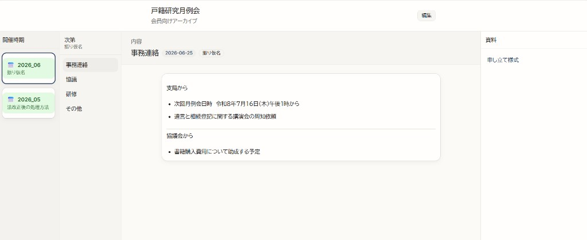

戸籍研究月例会ツールの仕組み
月例会の記録を、会員が読みやすく・書記が更新しやすく。
ひとことで言うと ──
Neonを正本にした
4ペインの月次アーカイブ
テキスト記録は DB に保存、Git はバックアップ。PDF原本はクラウド
編集の正本。書記が Web から保存したテキスト記録・公開状態
content/koseki-monthly-meeting/*.md。DB から db:export したバックアップ
PDF・スキャンなど原本ファイル。DB には URL のみ保存
ここから先で、保存先・画面構成・データの流れ・運用フローをひとつずつ解説します。

実際の画面（2026年6月回を表示）
保存するデータと保存先
1か月分の記録は、テキスト（DB / Git）と原本ファイル（ドライブ）に分かれて保存します。書記は Web 編集画面から保存するだけで、Git や Markdown ファイルを直接触りません。
なぜ DB（Neon）を正本にしたか
書記・運営・会員が同時に触るツールでは、1人の PC 上の Markdown ファイルを正本にすると、上書き・取りこぼし・公開タイミングのズレが起きやすい。Web から保存して、みんなが同じデータを読むには共有できる保存先＝データベースが必要だった。
アプリ本体を Vercel に載せる前提なら、PostgreSQL の Neon は接続設定や環境変数の連携が分かりやすく、無料枠から始められる。自前で DB サーバーを立てずに、書記運用に必要な「本番で共有保存」を実現できた。
保存するデータ（1回分）
どこに保存するか
書記が /koseki/edit から保存した内容のすべて（メタ情報・本文・資料 URL・draft/published）
運営コアが npm run db:export で Neon から書き出した Markdown。1か月＝1ファイル
PDF・配布資料などの実ファイル。編集画面の「資料」欄に URL を貼ると、Neon にリンクだけ保存される
Web 編集画面で保存
→ Neon に書き込み
db:export → Git commit
→ バックアップを残す
/koseki で閲覧
→ Neon から published のみ表示
誰が使う？ — 2つのペルソナ
過去の月例会を振り返りたい研究会メンバー
- 公開済み（published）の回次だけ見える
- 4ペインで月を選び、次第・内容・資料を読む
- 編集・下書き閲覧は不可
開催記録を清書し、会員向けに公開する担当者
- パスワード + Cookie で認証
- 下書き（draft）の作成・清書
- status を published にして公開
解決する課題
当日の欠席者
月例会に参加できなくても、清書された記録と資料リンクからその回の内容を把握できる。事務連絡・協議・研修の次第ごとに読める。
出席者・会員
過去の回次を月ごとに選び、研修・協議の内容をいつでも確認できる。宿題や次回予定もあわせて振り返れる。
画面の中心 — 4ペイン UI
左から右へ「いつ → 何の話 → 本文 → 資料」の順で選んで読みます。ペイン1・2を選ぶと、ペイン3・4の内容が連動して切り替わります。
公開済みの月一覧。yyyy_mm 形式で表示
事務連絡・協議・研修・その他の見出し一覧
選んだ見出しの本文（箇条書き or 段落）
常に表示。Markdown 内の [表示名](URL) をリンク化
バックアップの形 — 1ファイル＝1か月
Neon から npm run db:export すると、各月の記録が content/koseki-monthly-meeting/*.md に1ファイルずつ書き出されます。先頭にメタ情報（frontmatter）、本文にセクション見出し（##）が並びます。
データの流れ
MeetingEditForm → saveMeetingAction → Neon（meetings テーブル + セクション + 資料リンク）
loadMeetings() が Neon から取得し、KosekiWorkspace が published のみを4ペインに表示
npm run db:export → serializeMeetingMarkdown() → Git の content/koseki-monthly-meeting/*.md に書き出し
旧見出しの自動変換
以前のテンプレート（論点・資料リンク等）で書かれたファイルも、読み込み時に新しい見出しへ自動マージされます。保存すると新形式で書き出されます。
書記の運用フロー
_template.md を複製。
status: draft で必須項目を埋める
清書して status: published に。
Web 編集画面から Neon に保存
/koseki に公開。
4ペインで過去の回次を参照
Markdown の「資料」セクションに [表示名](URL) 形式でリンクを貼る
URL 一覧
/koseki
会員向けアーカイブ（4ペイン閲覧）
/koseki/edit/login
編集者ログイン（パスワード認証）
/koseki/edit
編集者向け一覧（draft 含む全件）
/koseki/edit/[slug]
個別回次の編集フォーム
工夫したポイント
4ペインは「ざっくり選ぶ → 詳しく読む」の流れ。左から右へ進むほど、見ている情報の粒度が細かくなります。
月 → 次第 → 内容 → 資料 （粗い ──────────────→ 細かい）
戸籍研究の記録を読むことに集中できるよう、装飾や機能を最小限に抑えました。
- 4ペイン固定で、迷わず「月 → 次第 → 本文」と辿れる
- 見出し名を統一（事務連絡・協議・研修・その他・資料）
- 本文は箇条書き中心。装飾の少ない読みやすい表示
- 資料は右ペインに常時表示。本文と資料を行き来しなくてよい
苦戦したポイント
最初の1回は Vercel に入れてデプロイまで進められた。しかし、再度開こうとしたとき2段階認証に引っかかり、ダッシュボードに入れなくなった。
Vercel での公開は不可能かもしれないと思った
別アカウントで進め直し、公開まで到達できた
本番で動かすには DATABASE_URL や KOSEKI_EDIT_PASSWORD などの環境変数が必要だが、Vercel の Settings に正しく登録できているかが最初は分からなかった。
つまずき：変数名の打ち間違い・Production 環境への未設定・登録後の再デプロイ忘れなどで、編集画面に入れない・DB に接続できない状態が続いた。ローカルの .env.local と Vercel 側の値を突き合わせて、一つずつ確認する必要があった。